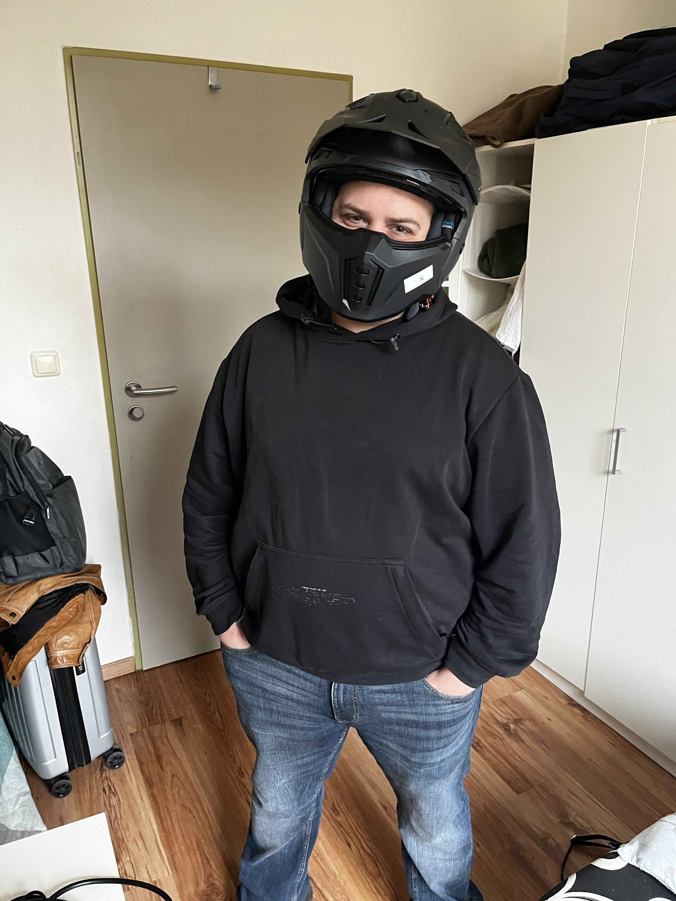

[01 // Biografie]
Ich bin IT-Profi mit Sitz in Deutschland und spreche Arabisch, Deutsch und Englisch. Mein Fokus reicht von IT-Support und Systemadministration über Webentwicklung bis hin zur Medienproduktion — darunter Videoschnitt und 3D-Rendering mit Blender.
Berufserfahrung
Meine prägendste IT-Erfahrung sammelte ich während meines Bundesfreiwilligendienstes am Sophien- und Hufeland-Klinikum, wo ich in der IT-Abteilung arbeitete — Drucker und Arbeitsplatzrechner in mehreren Bereichen konfiguriert und repariert, Hardware zusammengebaut und ausgerollt, klinische IT-Geräte mit DeskCenter Management Studio inventarisiert und eigenständig Hardware- und Netzwerkprobleme diagnostiziert und behoben.
[02 // Fähigkeiten]
[03 // Ausbildung]
[04 // Kostenlose Ressourcen]
KI-Tools & SaaS
Ich entwickle und biete kostenlose, KI-gestützte Tools und kleine SaaS-Produkte an — praktische Utilities, die du direkt im Browser nutzen kannst, ohne Anmeldung.
PDF-Ressourcen
Eine wachsende Sammlung kostenloser PDF-Dateien zu verschiedenen Alltagsthemen — von Produktivitätsvorlagen bis zu praktischen How-to-Guides, die den Alltag erleichtern.